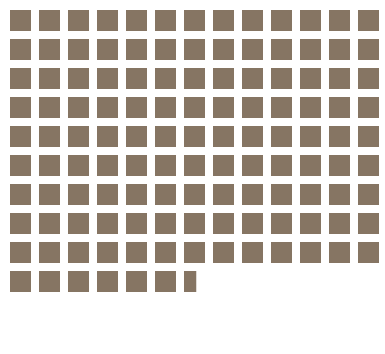
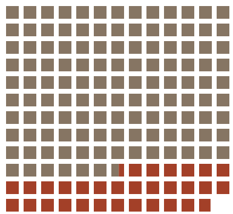
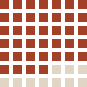

Two publications. One housing record. Opposite conclusions.
The proposition
Between 2000 and 2018, cities in the 49-country sample made substantial progress against slum housing conditions.
Progress can mean a smaller share of people facing inadequate conditions. It can also mean fewer people needing help. Those standards do not always agree.
The publications below are fictional. Their figures come from the same World Bank dataset, countries, and years.
A smaller share of urban residents lives in slum conditions.
The share fell by nearly a quarter, from 39.7% to 30.0%. Lower prevalence was recorded in 42 of the 49 countries.
2000
39.7%
−9.7percentage points→
2018
30.0%
Living in slum housing conditions Other urban residents Each dot represents 1% of that year’s urban population. The two populations are normalized separately. Partial dots preserve the unrounded percentages.
42 of 49countries recorded a lower share. Each mark represents one country.
“Substantial progress” is a lower prevalence of inadequate housing across a growing urban population.
Why this argument persuades5 design decisions & scores+
Scale: −2 fully deceptive to +2 fully earnest. Half steps describe mixed choices. The scores are our judgments, not measured properties.
−1.5
Let prevalence define “progress.”
The headline and separately normalized fields make the falling share the standard of success, while withholding the growing headcount from this publication. The comparison is correct, but its interpretation is selective; a combined rate-and-count chart would expose the competing standard sooner and weaken the standalone argument.
+2
Give both years the full 100% frame.
Two hundred-dot fields let readers compare proportions on identical scales without a truncated axis. A trend line could imply an unsupported continuous path between sparse housing observations; the endpoint fields show only what we actually compare, with proportional sectors rather than rounded whole dots.
+2
Hold the countries and calculation constant.
We require both indicators in both years for every country and weight the panel share by urban population. Allowing the available sample to change, or taking the simple mean of country percentages, could manufacture a different trend; the fixed panel preserves comparability but still leaves many countries outside the claim.
+1
Show how broadly prevalence improved.
The 42-of-49 tally makes the improvement feel widespread, and the seven pale marks retain the exceptions. We chose all countries over a selection of success stories, although giving each country one mark adds a second, unweighted view and continues to privilege the favorable measure.
−0.5
Borrow the manners of a statistical bulletin.
Serif headings, tabular figures, green ink, and numbered plates encourage a planner to read this as a settled benchmark. They help organize the evidence, but institutional styling can lend authority beyond what a selective argument deserves; the report therefore identifies the publisher as fictional rather than inventing a real endorsement.
The same years. The same 49 countries.
↓
A different definition of progress.
02 / The case againstA measure of unmet need
Housing, public services & the people still waiting
The Housing Ledger.
Special report / Urban housing49 countries · 2000–2018
The unfinished housing account
156.6 million more people still need adequate housing.
The estimated number of urban residents living in slum conditions grew by 25.3%. Measured in people still underserved, the housing task became larger.
2000
617.9million

2018
774.5million

Count up to the 2000 level Increase in the total Each square represents 5 million estimated residents. Both years use the same scale; partial squares preserve the estimates. The increase is arithmetic, not a group of tracked individuals.

39 of 49countries had more residents living in these conditions.
A housing system must reach people. The number it needed to reach grew.
Why this argument persuades5 design decisions & scores+
Scale: −2 fully deceptive to +2 fully earnest. We score the selective framing as well as the accuracy of the marks.
−1.5
Let the number still underserved define “progress.”
The headline makes the additional estimated residents the decisive fact and leaves the falling prevalence out of this publication. Growing demand is real, but treating it as a full verdict on progress neglects gains made during rapid urban growth; a combined view would force that qualification into the first reading.
+1.5
Derive comparable counts and call them estimates.
We multiply each country’s share by its own urban population before summing, rather than applying a possibly mismatched World rate to all urban residents. This exposes the service scale honestly, but combines estimates with country-specific urban definitions and no supplied uncertainty interval; rounded labels avoid implying census precision.
+2
Keep every population square the same size.
One square always represents five million estimated people, with identical spacing and frames in both years. This lets the volume of need grow without changing the unit or clipping a baseline; the tradeoff is that a square abstracts millions of different lives, so we avoid invented individual stories or person-shaped icons.
−0.5
Mark the increase as an obligation in rust ink.
The highlighted area and large headline direct attention to additional need before readers consider population growth. Color does not alter the quantities, but it assigns emotional weight to an arithmetic difference; the legend explicitly prevents the brown-and-rust split from being mistaken for the same residents followed over time.
+1
Count every country, including the exceptions.
The 39-of-49 tally argues that expanding need is widespread, while the ten pale marks acknowledge countries whose counts fell. We retained the full sample rather than selecting only the sharpest increases; the tally is still unweighted and selectively emphasizes headcounts, and the complete country records remain available below.
03 / Behind the arguments
The denominator changes the judgment.
These are two views of a fixed sample. Neither tells the whole housing story, and neither identifies the effect of a particular policy.
The common evidence
We use the urban-development dataset, pinned to revision f6bc043, from the September 15, 2021 World Bank export. The 49 countries have both required measures in both 2000 and 2018. World, regional, and income-group aggregates are excluded. No missing values are treated as zero, and no observations are interpolated.
The source’s “slum” measure concerns households lacking specified conditions such as adequate water, sanitation, space, durable housing, or tenure security. It is not a measure of every kind of housing insecurity. Urban-area definitions differ between countries.
The two calculations
Country estimate urban population × reported share ÷ 100
Panel prevalence sum of country estimates ÷ total urban population × 100
We calculate with full precision, then round for display. Counts are derived estimates. The snapshot provides no uncertainty intervals, and the endpoints do not track the same individuals. These totals describe the sample, not the world.
The complete panel account
Measure
2000
2018
Total urban population
1.558 billion
2.584 billion
Estimated residents in slum conditions
617.9 million
774.5 million
Share of urban residents
39.7%
30.0%
32 of 49 countries experienced both: a falling share and a rising estimated count. Brazil’s share and count both fell, so the reversal is not universal.
We began by exploring the data before choosing a proposition. The housing comparison initially seemed familiar: a percentage could fall while a count rose. What made it worth pursuing was the fixed-country result. In 32 countries, both happened within the same place, so the disagreement could not be dismissed as a changing sample. The harder design task was giving each publication a plausible reason to privilege one quantity. The bulletin treats prevalence as evidence of improvement; the newspaper treats the number still underserved as the size of an unfinished obligation. Their audiences helped determine the units, typography, headlines, and annotations.
The arithmetic was more straightforward than the judgment. A lower prevalence is a real gain, and a larger count is a real challenge. Neither alone answers whether progress was “substantial.” We were surprised by how persuasive correct values could become through omission and visual hierarchy, even with matched years and no distorted scales. We rejected a continuous trend line because the housing observations are sparse, and rejected person-shaped symbols because each mark represents a large aggregate, not an observed individual. Precise marks cannot remove uncertainty in the underlying estimates, so the count labels remain explicitly approximate.
For us, ethical visualization means making consequential choices traceable and matching the scope of a claim to the evidence. Normalizing by population is acceptable when the question concerns prevalence; it becomes misleading when a reader is encouraged to mistake that measure for the entire housing outcome. The same boundary applies to counts. Our publications deliberately approach that boundary through selective emphasis, and the scored rationales name where they cross it. We would not invent testimony, disguise missing data as zero, change the country panel between arguments, or attribute either change to a policy the dataset cannot evaluate. Showing the account behind both arguments allows readers to decide which definition of progress they find more convincing.